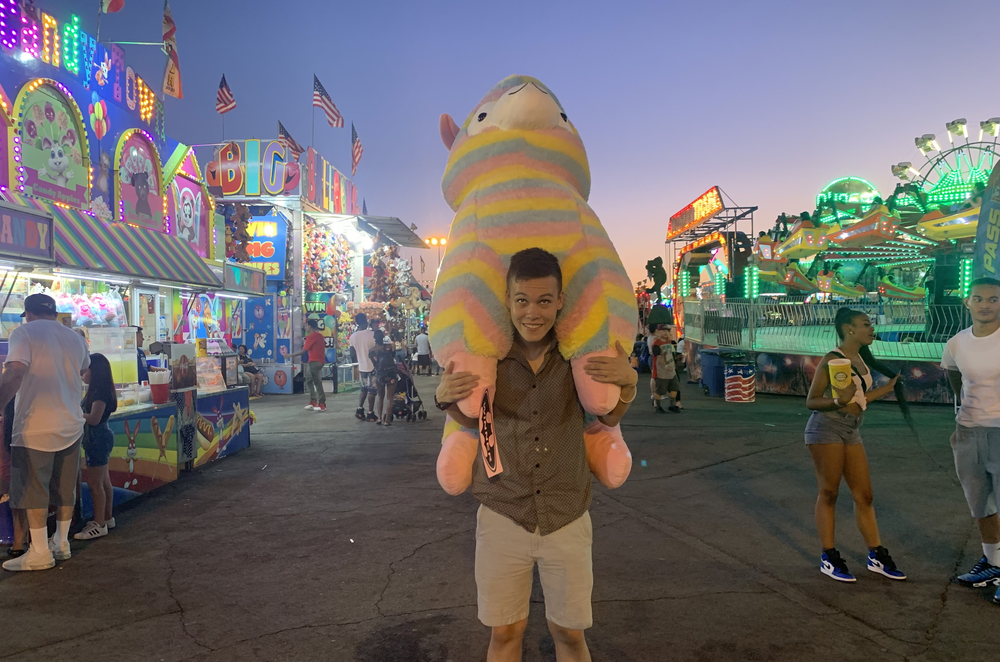

About Me
What I Do
Math has always been a tremendous passion of mine. Something about the thought process of math just fits perfectly with the way I think. What better way for me to share this than teaching. I am currently pursuing a teaching credential in secondary school mathematics. If I can instill just a little bit of my love for the subject into my students, I’d consider that a win.
While math as my academic passion, games are my leisurely passion, and not just playing them. I love to think about games even more than playing. This has led me to take on game design in my free time. I have jointly designed and programmed five projects across various hackathons and game james, and I plan to do many more going forward.
A Short History
Academically, I have always been strong at math. By this, I don’t mean using formulas and calculating numbers; I mean the important part of math, critical thinking and problem solving. I had a terrible time memorizing my multiplication table as a kid, and growing up I always thought things like this were a problem for me. Instead of memorizing my 9’s, I can up with my own rules like multiply by 10 and subtract once. It’s only now, looking back, that I realize what was happening. Rather than simply memorizing facts, I was learning to think critically. In 2016, I got a summer job at a Mathnasium learning center. This job eventually turned into time away from college as the Center Director. What really drew me to Mathnasium was the way they taught math. Memorizing was not acceptable, in fact they taught kids the very same technique I used for those 9’s. Working there taught me that the problem wasn’t with me as a kid but with the method of teaching. After two years there, I decided it was time to return to school in pursuit of teaching math. In 2019, I graduated from Cal Poly San Luis Obispo, with a degree in Pure Mathematics, becoming the first person in my family to graduate college.
My passion for games dates back to a similar time in elementary school. In 2001, for my eighth birthday, my older brother made me a Magic: the Gathering deck. At the time, it was a fun thing to play with; I wasn’t aware of the impact this would have on me. Flash forward to high school, where I got into one hobby after another, from yo-yos to Rubik’s cubes. In my senior year, my friends all started to play Magic. So naturally I dusted off the old cards. Then, we went down the rabbit hole. We went from playing in a Carl’s Jr. to playing in a local card shop, to playing in Grand Prix tournaments with thousands of competitors. Nothing could stop us from playing. But there was alway one part of the game that interested me more than playing, the rules and designs: the creation of the game itself. When I wasn’t playing, I was consuming all the information I could on how the game was built. My best friend has always known he was going to be a game designer; this was a little newer for me. In 2014 I attended a hackathon at UCI with him for the first time. I had never so much as looked at code, but I figured I’d give it a shot. Luckily for me, my experience with math made coding syntax come relatively smoothly. We didn’t have much to show from that hackathon, but it left us craving more. The next year, I went back to that same hackathon with him, this time with some coding under my belt. There, we built our first game in two days. It was one of the most satisfying accomplishments I’ve made. Every year since, we’ve made a game together. Each time getting better and learning a ton in the process.
My Hobbies
In my free time, I enjoy collecting Rubik’s cubes and other puzzles, listening to audiobooks podcasts, watching untold amounts of gaming content on YouTube, and, of course, all things Magic: the Gathering.